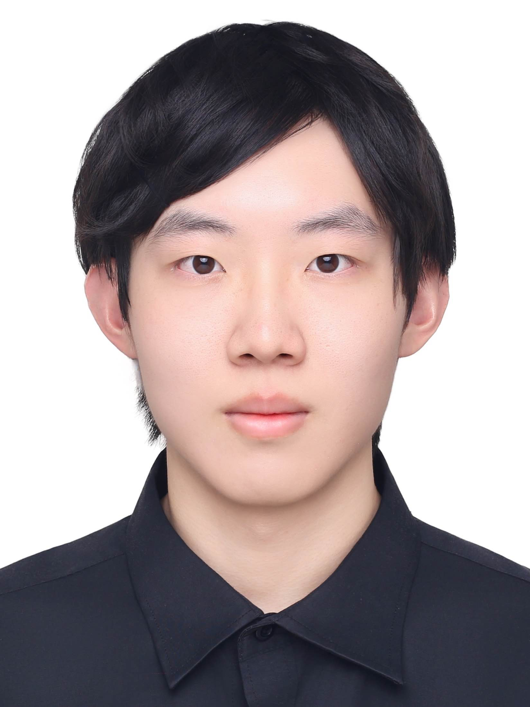

Xiang Jiang @ LAMDA
|
 |
蒋庠
Xiang Jiang
|
|


About Me
I am a M.Sc. student of School of Intelligence Science and Technology and a member of LAMDA Group , led by professor Zhi-Hua Zhou . Before my M.Sc. career, I was an undergraduate student of School of Intelligent Software and Engineering, Nanjing University and received my B.Sc. degree in Software Engineering on June, 2026. In the same year, I was admitted to study for a M.Sc. degree at Nanjing University through the postgraduate entrance examination. Now I'm focused on lightweight large language models, with a particular interest in KV-cache compression and long-context inference efficiency. In addition, I am also interested in CUDA programming and GPU systems.
Education
-
2026.9~Present
M.Sc degree: Artificial Intelligence, School of Intelligence Science and Technology, Nanjing University, China -
2022.9~2026.6
B.Sc. degree: Software Engineering, School of Intelligent Software and Engineering, Nanjing University, China.
Project
MoE Offloading for Efficient Inference
We studied efficient inference and deployment of large-scale Mixture-of-Experts (MoE) models under single-GPU or low-memory settings, addressing GPU memory constraints and high latency issues. We proposed a unified offloading framework where non-expert parameters are kept on GPU while expert parameters are dynamically loaded on demand, combined with intelligent caching and predictive prefetching. We designed a value-driven cache with a three-level eviction strategy and adaptive prefetching to enable efficient MoE inference under limited memory. The approach reduces memory usage by 64.3% and improves inference latency by 3.1× on a 16GB GPU while maintaining comparable model accuracy.
[PDF]
Frontend Wizard: AI-Powered Design-to-Code Converter
We developed an AI-powered application that automatically converts UI design screenshots into production-ready frontend code. We integrated the Qwen-VL-Max vision-language model to analyze design images and extract layout and style information, then generate structured HTML/CSS/JavaScript conforming to BlueOS UX standards. We built the system on a Node.js + Midway backend with Alibaba Cloud OSS for image storage, reducing manual coding overhead and design-development communication errors.
[GitHub]
Internship
-
2025.4~2025.7: ByteDance (字节跳动)
Platform Engineer
I worked on GPU scheduling, allocation, and monitoring, improving cluster utilization by 20%. I built a Go-based reconciliation system for TCE cloud services, reducing verification cycles from 8h to 3h by matching GPU and PSM states. I also helped design a vLLM inference platform upgrade, introducing C++ services to improve performance and stability.
-
2024.12~2025.3: Philips (飞利浦)
Software Engineer
I used perf and Valgrind to profile an image processing library, identifying memory leaks and performance bottlenecks and improving execution efficiency. I ported CPU-based C++ parallel algorithms to CUDA, optimizing data access with shared memory and block-level caching to better utilize GPU resources. I also migrated the system from Windows to Linux to support cross-platform deployment. -
2024.7~2024.9: OnkoCare (昂凯生命)
Software Engineer
I developed an intelligent medical chatbot based on multiple pretrained models to provide medical Q&A and symptom analysis. I built a RAG-based inference system with FastAPI backend, using a hybrid retrieval architecture combining BGE embeddings, MySQL for structured knowledge management, and Milvus for vector search.
Correspondence
Email: sosljsos@protonmail.com, sosljsos@qq.com
Address: Nanjing University (Suzhou Campus), No. 1520 Taihu Avenue, Huqiu District, Suzhou 215163, China